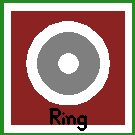
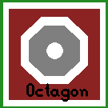
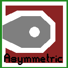

![[Arc, Line, Polygon, Pin, Via]](objects_basic.png)
Pcb-rnd is designed to handle the geometric data of a PCB. This section describes how pcb-rnd represents reality (e.g. copper shapes) in memory.
Each design pcb-rnd handles is a board. The board has global properties and hosts layers. Most drawing primitives (objects) are on layers. This section describes the most important global properties.
Board size is given as a width and a height. For rectangular boards this can be the real board size, but more commonly it is used to simply determine the on-screen drawing area and the final board dimensions are specified using the outline layer. If the board is not rectangular, the contour must be specified on the outline layer and the board size must be large enough that the outline fits in it.
Netlist is the list of logical connections to be realized in copper. A netlist is a list of named nets. Each net consists of a list of terminals (pins or pads) to connect. A terminal is given as elementname-pinname, e.g. U4-7 means "pin number 7 in element called U4".
Fonts are always embedded in the design file in order to guarantee that the file can be ported and will look the same on different hosts.
Misc editor settings, such as grid size and offset.
Pcb-rnd aides the user in creating real pcb product, composed of real physical layers. pcb-rnd also refers to layers to conceptualize this process, but pcb-rnd layers are different than the physical layers.
Unlike a physical layer, a pcb-rnd layer has no thickness. It is a 2 dimensional, logical canvas, similar to layers in image manipulation software like gimp. In pcb-rnd there are explicit and virtual layers. An explicit layer contains drawing primitives (objects) placed by the user. The user has full control over an explicit layer: objects can be added or removed or changed any time. A virtual layer has no such flexibility: pcb-rnd computes its content from explicit layers and there's no way to change the result directly. A layer is always part of a layer group.
One or more explicit layers form a layer group. All pcb-rnd layers of a layer group will end up on the same physical layer. The visibility of layers in a layer group are toggled together. Having more than one layer in a group may be useful to:
Since layer groups donate the physical layers, a board stack-up is built of layer groups. Substrates are layer groups without drawable layers in them. The mask, paste, silk layer groups behave the same and can host zero or more logical layers.
Each layer group has a type. Types are:
Each layer group has a location. Locations are:
Not all combination of type and location are supported: e.g. for an outline layer group the location is always global. The table below lists whether a combination is supported or not.
| top | bottom | intern | global | composite | |
|---|---|---|---|---|---|
| copper | yes | yes | yes | no | no |
| silk | yes | yes | no | no | yes |
| outline | no | no | no | yes | no |
| mask | yes | yes | no | no | yes |
| paste | yes | yes | no | no | yes |
Pcb-rnd supports a small number of basic drawing objects, from which complex objects can be build. The following figure demonstrates all basic objects:
Objects have flags that control their behavior. The following flags are common to all objects:
| name | description |
|---|---|
| selected | selected by the user ("cyan") |
| found | found as a galvanic connection in the last connection lookup ("green") |
| warn | offending object e.g. in a short circuit ("orange") |
| lock | locked by the user: can't be selected, moved or changed |
Lines are round ended straight line segments with a width and a clearance. The above image shows 3 lines connected. Lines are mainly used to construct traces. A line is always on a specific layer. The user interface allows drawing lines aligned to 90 or 45 degree axes or lines with random angle.
A line is specified by its two endpoints, width and clearance:
![[Line interacting with a polygon]](obj_line.png)
A clearance is the gap between a line and the surrounding polygon in the same layer group. The gap is made only if the surrounding polygon has the "clearpoly" flag set and the line has the "clearline" flag set. If either of these flags is not set, no gap is made - or in pcb-rnd terminology, the line is joined to the polygon.
| name | description |
|---|---|
| clearline | clears polygons with the "clearpoly" flag in the same layer group |
Arcs are round ended circular arcs with trace width and clearance. They behave like lines in all respects.
![[Arc interacting with a polygon]](obj_arc.png)
Although the arc is described with its center, radius, start and end angles, the user interface may offer drawing arcs by endpoints.
| name | description |
|---|---|
| clearline | clears polygons with the "clearpoly" flag in the same layer group |
Polygons are solid, filled copper areas with optional holes in them. Polygon contour consists of lines - when they look curvy, its really high resolution line approximation. There are two type of holes in a polygon: explicit, user drawn holes and clearance cutouts. User drawn holes are "negative" polygons drawn manually. To keep polygons simple, if an user drawn hole touches the contour of a polygon, the hole is removed and the contour is modified; if two holes touch, they are merged into one hole.
If the polygon has the "clearpoly" flag set (default), clearance cutouts are automatically inserted around objects on the same layer group:
Overlapping or touching polygons are not automatically merged. An object with the "clearline" flag set will clear all "clearpolys" it is over - if there are multiple such polygons overlapping under the objects (on the same layer group), all such polygons get the clearance cutout.
If a polygon is cut into multiple islands, the behaviour depends on the "fullpoly" flag of the polygon. If it is not set (default), only the largest island is kept, else all islands are kept. In the "fullpoly" mode islands will have no galvanic connection (unless the user adds vias and connect them on another layer), still the program will handle all islands as a single polygon. This is risky: the program will indicate connection between polygon islands that are not really connected, only because they are part of the same polygon!
| name | description |
|---|---|
| clearpoly | should have clearance around objects, if the objects have the appropriate flags too |
| fullpoly | keep all islands, not only the largest |
A text object is string and a series of symbols (pcb-rnd's terminology for glyph). Symbols are built of lines and are stored in the font. Each board can have its own font, but there can be only one font per board. When the string of the text is edited, the object is rendered again so that the new string appears.
Text objects can be placed on copper and silk layers. Text can be rotated only in 90 degree steps. Each text object has a scale parameter that determines its size in percentage. A scale of 100% means symbols are rendered in 1:1 size.
The clearance around text is rendered as a round corner rectangular cutout. Bug: copper text can not participate in short circuits, the galvanic connection checker code skips texts.
A via is an electrically connected hole that connects copper rings to multiple layers. Since a via hole always punches all layer groups and places the same ring on any outside layer groups, blind or bured vias and individually defined layer padstacks (e.g. with changing ring shape) are not explictly designable in pcb-rnd.
A copper ring also has a per layer property whether or how it connects to the surrounding polygon on the given layer; this is called the thermal style of the via. The following options are available:
| thermal style | appearance/thermal relief style |
|---|---|
| no connection | 
|
| solid | 
|
| round x 90 | 
|
| round x 45 | 
|
| sharp x 90 | 
|
| sharp x 45 | 
|
The shape of the copper annulus (the pad ring) is also selectable from a predefined set of symmetrical and asymmetrical set:
| shape | appearance |
|---|---|
| ring (default) |  |
| square | 
|
| octagon |  |
| asymmetrical |  |
An element is an instance of a footprint that is already placed on the board or loaded into a paste buffer.
In the footprint form the construct is small and flexible. It describes all the physical parts, like pins, pads, silk lines. In the same time a footprint leaves many details blank, e.g. it doesn't specify exact layers, it doesn't have font and the refdes is random.
When the footprint is loaded, it becomes an element. The element inherits all the physical properties and the blank details are filled in with the data taken from the current board: the layer binding is done, all parts of the element lands on a specific board layer; the refdes is rendered using the font in the current board.
The footprint -> element instantiation is also a copy. Once the element is created from a footprint, the element is a self-containing object and does not have any direct reference to the footprint it was once derived from. Changes to the original footprint will not affect the elements.
In other words, a footprint is an abstract recipe, part of a library, while an element is a land pattern already embedded in a specific design and describes actual copper and silk.
Currently an element or footprint can contain the following objects:
An element has the following properties:
| element property | description |
|---|---|
| name: refdes | unique identifier, e.g. "C42" |
| name: value | informal value, e.g. "15 pF" |
| name: description | informal element or footprint description, e.g. "1206" |
Extra object flags:
| name | description |
|---|---|
| ONSOLDER | when set, the element is on the bottom side, else it's on the top side |
| NONETLIST | when set, the element is not intended to be on the netlist; useful for elements that are not present on the schematics and are placed during the layout design |
| HIDENAME | when set the name of the element is hidden |
| DISPLAYNAME | when set the names of pins are shown |
| name | description |
|---|---|
| name | pin name, e.g. "base" |
| number | pin name, e.g. 2 |
| intconn | internal element connections (see section TODO) |
| name | description |
|---|---|
| via flags | (extra flags listed for vias are applicable to pins too) |
| WARN | the pin contributes to a short circuit ("orange mark") |
A pad is an smd pad of an element. It is modelled as a line segment, usually with square cap - this makes the pad look like a rectangle. A pad has the same metadata and capabilities as pins. Overlapping pads are supported. A pad is always on either the top or the bottom copper layer group.
A pad has the following properties:
| name | description |
|---|---|
| name | pin name, e.g. "base" |
| number | pin name, e.g. 2 |
| intconn | internal element connections (see section TODO) |
| name | description |
|---|---|
| via flags | (extra flags listed for vias are applicable to pins too) |
| WARN | the pin contributes to a short circuit ("orange mark") |
| EDGE2 | indicates that the second point is closer to the edge. For pins, indicates that the pin is closer to a horizontal edge and thus pinout text should be vertical. (Padr.Point2 is closer to outside edge also pinout text for pins is vertical) |
A rat line represents a logical connection that is not yet realized in copper. It connects two drawing primitives.
A netlist is a list of named logical networks. Each network is a list of netlist terminals that should be connected. A netlist terminal is a pair of element-refdes and pin-number (or pad-number). Thus a typical netlist looks like the following:
The netlist assumes element refdes are unique. If an element has multiple instances of the same pin (or pad) number, the engine picks one randomly and assumes there's an invisible, internal connection within the element.
Rat lines can be regenerated from the current netlist for missing connections. Connections that are realized in copper but not present on the netlist, pcb-rnd gives a "short circuit" warning. Both happens when the net is "optimized" (upon user request).
The netlist is typically derived from a schematics by external tools (such as gnetlist). The netlist can be imported (updated) any time. This process is called "forward annotation".
It is also possible to make changes to the netlist from within pcb-rnd: pins can be swapped, element packages replaced using back annotation actions. Such actions will keep a list of intended netlist and element changes, called the netlist patch. Pcb-rnd will keep these changes even if a new version of the netlist is imported. It is possible to export the netlist patch that can be imported in the schematics editor to change the schematics - this process is called "back annotation". A new forward annotation from the schematics editor to pcb-rnd will then cancel the netlist/element changes as the new netlist import netlist matches the intended (changed) netlist.
| Physical board | pcb-rnd | Description |
|---|---|---|
| Layer | Layer Group | enables the user to design complex physical constructions |
| copper layer | layer group with copper layers | designed with one to many pcb-rnd layers |
| top/component copper layer | layer group with copper layers | any group of copper layers defined as the 'top' of a board |
| bottom/solder copper layer | layer group with copper layers | any group of copper layers defined as the 'bottom' of a board |
| substrate | N/A | pcb-rnd does not currently handle phyiscal substrate information |
| contour of the board | outline layer | designed using standard pcb-rnd elemnts |
| outline routing path | outline layer | designed using standard pcb-rnd elemnts |
| polygon pour | polygon | an object available for design in any layer group |
| plane | polygon | see above |
| mask | layer group with mask layers | design layers available: automatic, additive, subtractive |
| silk | layer group with silk layers | design layers available: automatic, additive, subtractive |
| N/A | Rats | assistve layer automatically generated with netlist and copper layer group connection data |